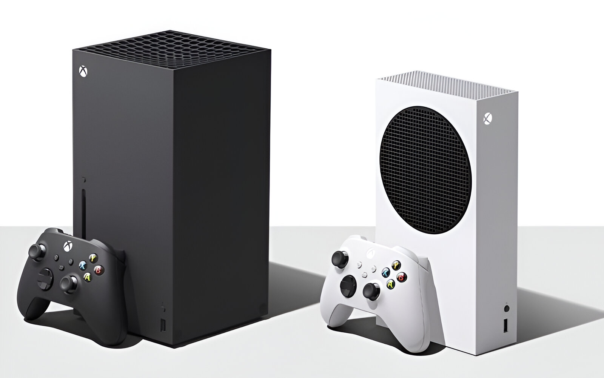
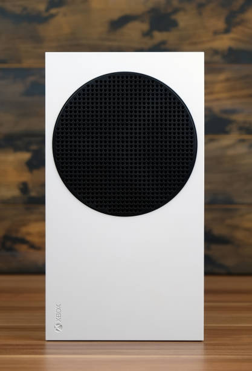
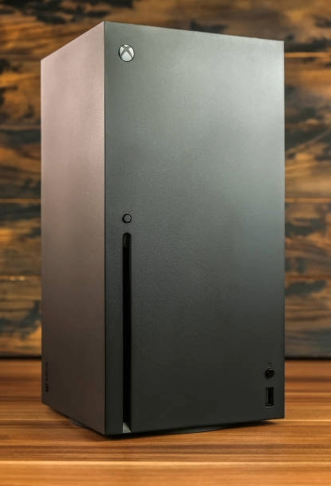

Xbox Series X vs Xbox Series S
¿Cual Elegir?

La batalla entre las consolas de nueva generación sigue más viva que nunca, y Xbox ha lanzado dos propuestas clave: la Serie S y la Serie X. Ambas ofrecen experiencias innovadoras para los jugadores, pero sus diferencias en potencia, almacenamiento y precio las hacen atractivas para distintos tipos de usuarios. En este artículo, compararemos detalladamente las características de estas consolas, para que descubras cuál es la más adecuada para ti.
.png)
.png)
.png)
Xbox Series X: Desde el primer momento, se siente como una consola robusta y sólida. Su tamaño es considerablemente mayor, pero eso tiene una razón de ser: es un dispositivo pensado para quienes desean potencia máxima. Su diseño elegante en forma de torre permite mantener una buena ventilación, necesaria para soportar el hardware que lleva dentro.
| Procesador (CPU) | 8 núcleos a 3.8 GHz (3.66 GHz con SMT) Custom Zen 2 |
|---|---|
| Gráfica (GPU) | 52 CUs a 1,825 GHz Custom RDNA 2 |
| Potencia GPU | 12,15 teraflops |
| Memoria RAM | 16 GB GDDR6 |
| Ancho de banda de la memoria | 10 GB a 560 GB/s, 6GB a 336 GB/s |
| Objetivo de rendimiento | 4K, 60fps, hasta 120fps |
| Almacenamiento interno | 1 TB PCIe Gen 4 NVME SSD |
| Expansión de almacenamiento interno | 1 TB Expansion Card |
| Soporte para unidades HDD externas | USB 3.2 |
| Rendimiento I/O | 2.4 GB/s (sin comprimir), 4.8 GB/s (comprimido) |
| Lector de discos | 4K UHD Blu-Ray |
| Salida de vídeo | HDMI 2.1 |
| Dimensiones | 301mm x 151mm x 151mm |
| Precio | 499.99 Dolares |
.png)
.png)
.png)
Xbox Series S: Aquí encontramos lo opuesto, una consola mucho más pequeña y ligera. Es muy fácil de acomodar en cualquier espacio de tu sala de juegos. Ideal si prefieres algo más discreto. El diseño compacto no afecta su rendimiento en exceso, aunque claro, sus limitaciones están más ligadas a su potencia que a su tamaño.
| Procesador (CPU) | 8 núcleos a 3.6 GHz (3.4 GHz con SMT) Custom Zen 2 |
|---|---|
| Gráfica (GPU) | 20 CUs a 1,565 GHz Custom RDNA 2 |
| Potencia GPU | 4 Teraflops |
| Memoria RAM | 10 GB GDDR6 |
| Ancho de banda de la memoria | 8 GB a 224 GB/s, 2 GB a 56 GB/s |
| Objetivo de rendimiento | 1440p, 60fps, hasta 120 fps |
| Almacenamiento interno | 512 GB PCIe GEn 4 NVME SSD |
| Expansión de almacenamiento interno | 1 TB Expansion Card |
| Soporte para unidades HDD externas | USB 3.2 |
| Rendimiento I/O | 2.4 GB/s (sin comprimir), 4.8 GB/s (comprimido) |
| Lector de discos | No tiene |
| Salida de vídeo | HDMI 2.1 |
| Dimensiones | 275mm x 151mm x 63,5mm |
| Precio | 299.99 Dolares |
Rendimiento y Gráficos: Un análisis más profundo
- Ray Tracing:
- Ambas consolas soportan ray tracing, una tecnología que simula el comportamiento de la luz en tiempo real, ofreciendo efectos visuales más realistas como sombras, reflejos y refracciones. Sin embargo, la Series X, al tener una GPU más potente, puede ofrecer una implementación más completa y con mayor rendimiento.
- FPS Boost:
- Esta característica permite a los juegos de Xbox One aprovechar la potencia de las consolas de nueva generación, ofreciendo tasas de fotogramas más altas y una experiencia de juego más fluida en ambas Series X y Series S.
- Quick Resume:
- Tanto la Series X como la Series S permiten reanudar varios juegos casi instantáneamente, gracias a su SSD de alta velocidad. Esta característica es especialmente útil para aquellos que cambian constantemente de juego.
- Juegos optimizados para Series X|S:
- Muchos juegos se están optimizando específicamente para las nuevas consolas, aprovechando al máximo su hardware. Esto se traduce en mejores gráficos, mayor rendimiento y nuevas características.
- Escalado de resolución:
- Ambas consolas utilizan técnicas de escalado de resolución para mejorar la calidad de imagen en televisores que no son 4K. La Series X, gracias a su mayor potencia, puede ofrecer un escalado de mayor calidad.
Tanto Xbox Series X como Series S representan un salto significativo en la potencia y las capacidades de las consolas de videojuegos. La Series X ofrece una experiencia de juego de última generación con gráficos impresionantes y un rendimiento sólido, mientras que la Series S es una excelente opción para aquellos que buscan una consola más asequible sin sacrificar la calidad de la imagen. A medida que el catálogo de juegos exclusivos crece y los desarrolladores aprovechan al máximo las capacidades de estas consolas, podemos esperar ver experiencias de juego cada vez más inmersivas y emocionantes.
Almacenamiento
La Xbox Series X incorpora un SSD interno de 1 TB y es compatible con unidades externas USB 3.1. Por
otro
lado, la Series S, en su versión inicial, tiene una memoria SSD de 512 GB, lo que puede limitar un
poco la
cantidad de juegos instalados, aunque eso dependerá de las exigencias del jugador y si necesitar
tener más
de siete títulos instalados al mismo tiempo.
Como solución, Xbox lanzó la versión carbon black, que es un modelo de la Series S con capacidad de
1 TB de
almacenamiento.
Ambas consolas presentan una ranura de expansión para una unidad de disco propietaria adicional, la
tarjeta
de expansión de almacenamiento Seagate para Xbox Series X/S, que asegura un rendimiento óptimo y
todas las
funciones de nueva generación.
¿Físico o digital? El dilema de la unidad de disco
La decisión de adquirir una Xbox Series X o Series S va más allá de las especificaciones
técnicas. La
presencia o ausencia de una unidad lectora de discos es un factor clave que puede influir en la
elección del
consumidor. Los jugadores más tradicionales, que valoran la experiencia de coleccionar juegos
físicos y la
posibilidad de revenderlos, se inclinarán por la Series X. Por otro lado, aquellos que priorizan
la
comodidad, la rapidez de acceso y la optimización del espacio, encontrarán en la Series S una
opción
atractiva.
La elección entre una consola física o digital también tiene implicaciones económicas. Si bien
la Series S
tiene un precio más accesible, los costos a largo plazo pueden variar dependiendo de las ofertas
y
promociones disponibles para juegos físicos y digitales.
Despues de Todo esta informacion queda la pregunta:
¿Con cual me quedo?

Series S
Ideal para: Quienes buscan una consola asequible y compacta, sin
sacrificar
calidad en la experiencia de juego.
- Ventajas
- Precio más accesible: Es una opción más económica
para adentrarse en la
nueva generación.
- Tamaño compacto: Fácil de colocar en cualquier
espacio.
- Juegos optimizados: Muchos juegos están diseñados
para aprovechar al
máximo su hardware,
ofreciendo una experiencia visual impresionante.
- Desventajas:
- Menor potencia gráfica: No alcanza resoluciones
4K nativas, aunque ofrece
un excelente
escalado.
- Menor almacenamiento interno: 512 GB, que puede
llenarse rápidamente si
instalas muchos
juegos.

Series X
Ideal para: Si buscas la máxima potencia gráfica y una
experiencia de
juego de ultra alta definición.
- Ventajas
- Mayor potencia gráfica: Capaz de renderizar
juegos en 4K nativo con altas
tasas de
fotogramas.
- Ray tracing en tiempo real: Efectos de
iluminación y reflejos más
realistas.
- Mayor almacenamiento interno: 1 TB, lo que
permite instalar más juegos
sin tener que
preocuparse
por el espacio.
- Desventajas:
- Precio más elevado: Es una inversión mayor.
- Tamaño más grande: Ocupa más espacio.
Series S
Ideal para: Quienes buscan una consola asequible y compacta, sin sacrificar calidad en la experiencia de juego.
- Ventajas
- Precio más accesible: Es una opción más económica para adentrarse en la nueva generación.
- Tamaño compacto: Fácil de colocar en cualquier espacio.
- Juegos optimizados: Muchos juegos están diseñados para aprovechar al máximo su hardware, ofreciendo una experiencia visual impresionante.
- Desventajas:
- Menor potencia gráfica: No alcanza resoluciones 4K nativas, aunque ofrece un excelente escalado.
- Menor almacenamiento interno: 512 GB, que puede llenarse rápidamente si instalas muchos juegos.
Series X
Ideal para: Si buscas la máxima potencia gráfica y una experiencia de juego de ultra alta definición.
- Ventajas
- Mayor potencia gráfica: Capaz de renderizar juegos en 4K nativo con altas tasas de fotogramas.
- Ray tracing en tiempo real: Efectos de iluminación y reflejos más realistas.
- Mayor almacenamiento interno: 1 TB, lo que permite instalar más juegos sin tener que preocuparse por el espacio.
- Desventajas:
- Precio más elevado: Es una inversión mayor.
- Tamaño más grande: Ocupa más espacio.
Ambas Consolas cuentan con el mismo acceso a cientos de juegos por una
suscripción
mensual del Xbox Game
Pass
y con su retrocompatibilidad.
Todo depende de ti